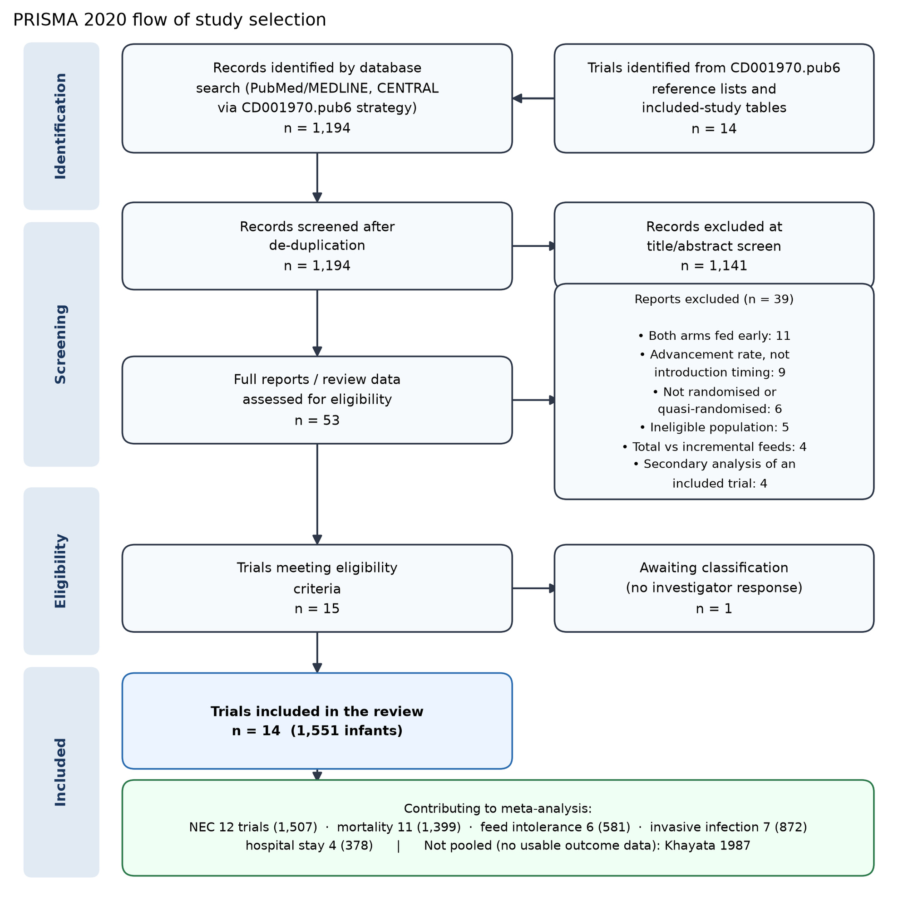
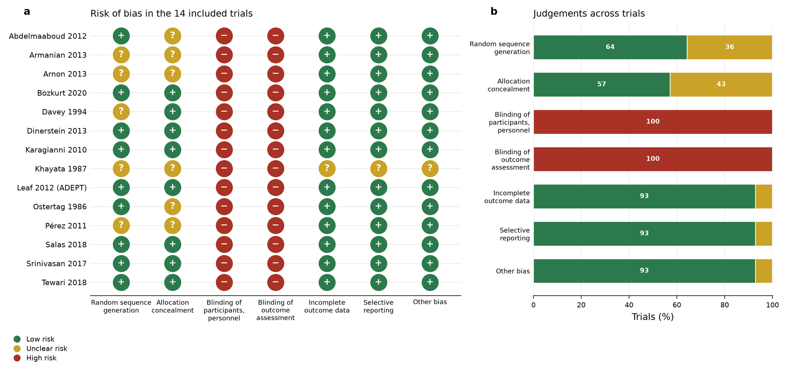
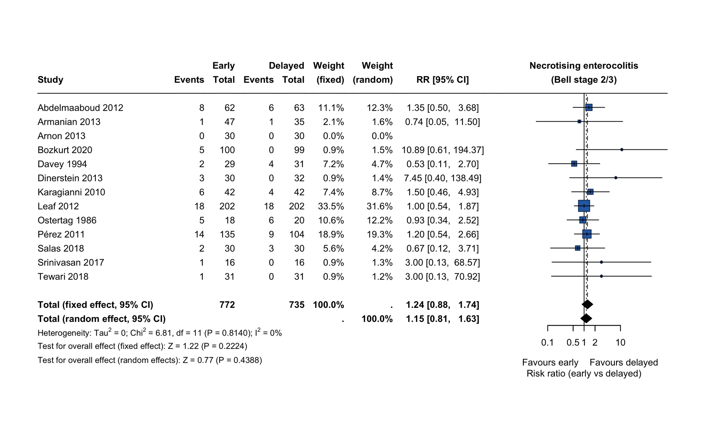
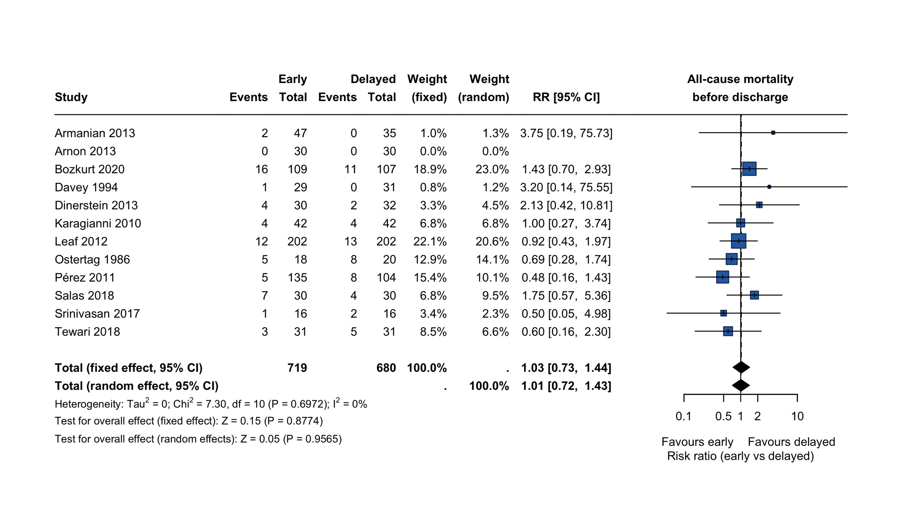
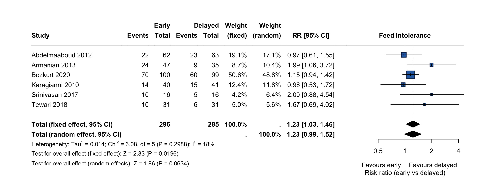
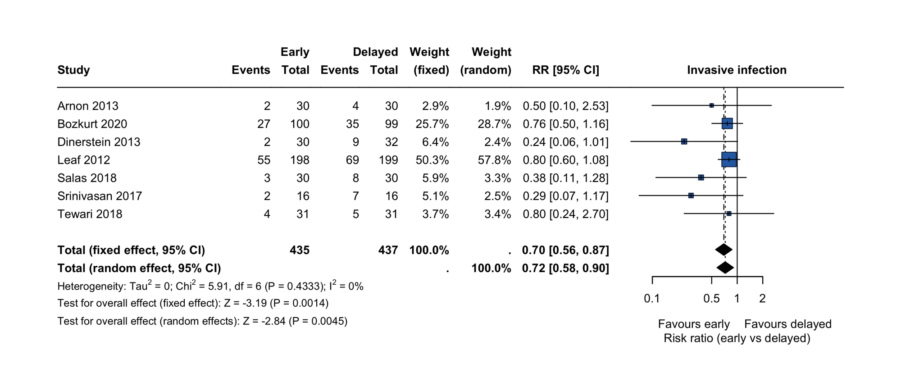
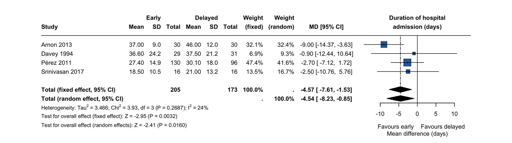
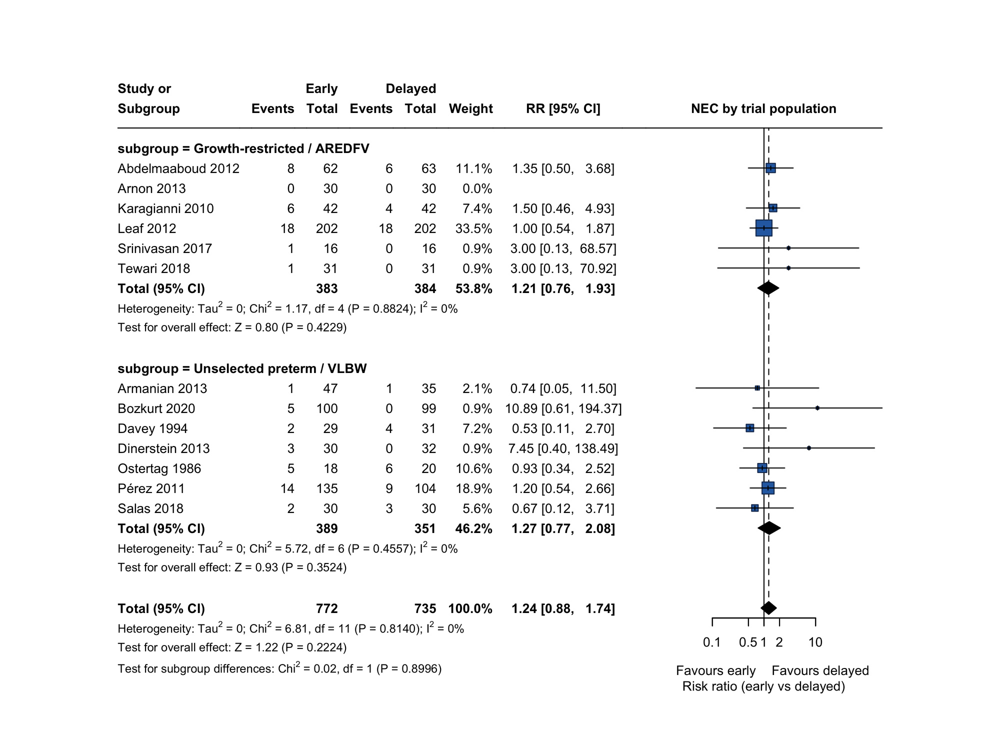
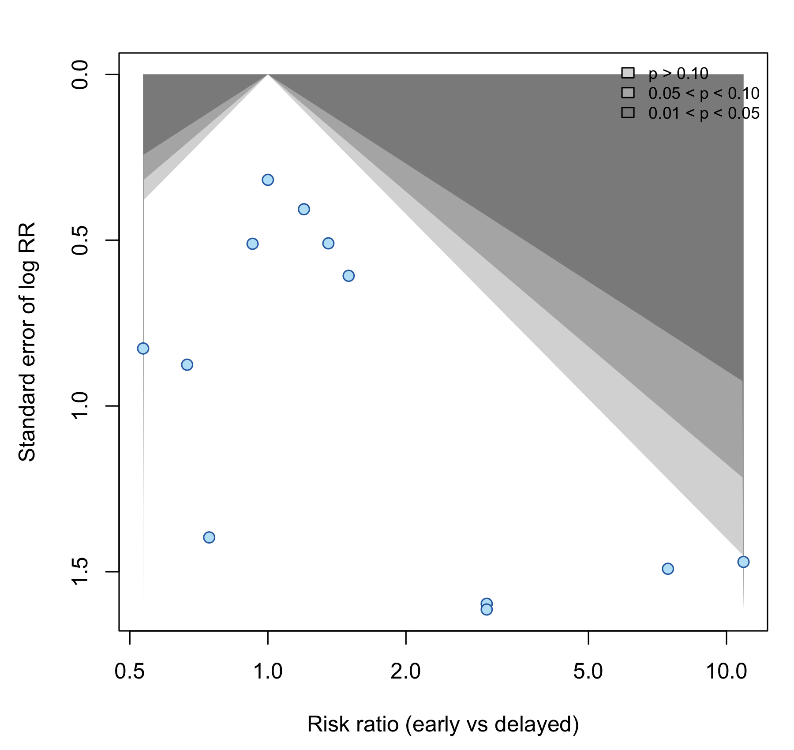

Early introduction and progression of enteral feeding volumes within 96 hours of birth in very preterm or very low birth weight infants
A systematic review and meta-analysis
Abstract
Background. Very preterm and very low birth weight (VLBW) infants have historically had enteral feeds withheld or restricted to trophic volumes for several days after birth, on the rationale that early progression of milk volume precipitates necrotising enterocolitis (NEC). Contemporary nutritional practice favours introducing and advancing feeds early, but the balance of benefit and harm at the 96-hour threshold has not been quantified as a distinct question.
Objectives. To determine the effect of introducing and progressing enteral feeding volumes within 96 hours of birth ("early"), compared with beginning progression at four or more days after birth ("delayed"), on NEC, mortality, feed intolerance, invasive infection and duration of hospital admission in very preterm or VLBW infants.
Methods. We searched PubMed/MEDLINE and CENTRAL (via the search strategy of Cochrane review CD001970.pub6) and screened 1,194 records, supplemented by the reference lists and included-study tables of that review, with an update search to August 2026. We included randomised controlled trials comparing a policy of introducing progressive enteral feeds within 96 hours of birth with a policy of delaying progression to day four or later. Two data sources were used: primary trial reports where obtainable (7 trials), and the verbatim analysis tables of CD001970.pub6 where the primary report was not obtainable. We pooled risk ratios (RR) using Mantel-Haenszel fixed-effect models as the primary analysis, with DerSimonian-Laird random-effects models alongside, and assessed certainty using GRADE. The direction of effect is oriented throughout so that RR > 1 denotes more events with early introduction.
Results. Fourteen trials (1,551 infants) met eligibility criteria; 13 contributed to at least one meta-analysis. Early introduction did not increase NEC (12 trials, 1,507 infants; RR 1.24, 95% CI 0.88 to 1.74; I2 = 0%; absolute difference +17 per 1000, 95% CI -10 to +44) and did not affect all-cause mortality before discharge (11 trials, 1,399 infants; RR 1.03, 95% CI 0.73 to 1.44; I2 = 0%). Early introduction reduced invasive infection (7 trials, 872 infants; RR 0.70, 95% CI 0.56 to 0.87; I2 = 0%; -96 per 1000, 95% CI -153 to -38) and shortened hospital admission (4 trials, 378 infants; mean difference -4.6 days, 95% CI -7.6 to -1.5). Feed intolerance was more frequent with early introduction on the fixed-effect model (6 trials, 581 infants; RR 1.23, 95% CI 1.03 to 1.46) but the random-effects estimate crossed no effect (RR 1.23, 95% CI 0.99 to 1.52). There was no subgroup difference by trial population (growth-restricted/AREDFV versus unselected; P = 0.90) or by milk type (P = 0.29). Certainty was low for NEC, mortality, feed intolerance and hospital stay, and moderate for invasive infection.
Conclusions. In very preterm and VLBW infants, beginning and advancing enteral feeds within 96 hours of birth does not detectably increase NEC or death. It is associated with fewer invasive infections and a shorter hospital stay, at the cost of more frequently recorded feed intolerance. The evidence does not support withholding progressive enteral feeding beyond 96 hours to prevent NEC, including in growth-restricted infants with abnormal antenatal Doppler studies. All estimates rest on unmasked trials; the NEC confidence interval remains wide enough to be compatible with a clinically important increase, and a definitive trial powered for NEC in extremely preterm infants has not been done.
1. Background
1.1 Description of the condition
Necrotising enterocolitis is the most common acquired gastrointestinal emergency of the newborn and remains among the leading causes of death after the first postnatal week in very preterm infants. Its pathogenesis is incompletely understood but involves the interaction of intestinal immaturity, an abnormal microbial colonisation pattern, an exaggerated mucosal inflammatory response, and enteral substrate. Because enteral milk is one of the few modifiable elements in that sequence, feeding policy has been the target of intervention for four decades.
Very low birth weight (VLBW, < 1500 g) and very preterm (< 32 weeks' gestation) infants are the principal risk group. Within it, a subgroup with intrauterine growth restriction (IUGR) and antenatal Doppler evidence of absent or reversed end-diastolic flow velocities (AREDFV) in the umbilical artery has been considered at particularly high risk, on the reasoning that chronic fetal circulatory redistribution away from the splanchnic bed leaves the intestine ischaemia-primed at birth.
1.2 Description of the intervention
The intervention under study is a policy decision about when to begin advancing enteral feeding volume, not the rate at which volume is subsequently advanced and not whether trophic ("minimal enteral", "gut priming") feeds are given at all.
- Early introduction and progression — enteral feeds are begun and volumes are progressively advanced starting within 96 hours (four days) of birth.
- Delayed introduction — the infant is kept nil by mouth, or held at unchanging trophic volumes, until day four or later, at which point progression begins.
Both arms in an eligible trial receive the same or a similar volume advancement rate once progression starts; trials that randomised the rate of advancement (e.g. 15 versus 30 mL/kg/day, both starting on day 1) address a different question and were excluded.
1.3 How the intervention might work
Delaying progression is intended to allow intestinal maturation, resolution of perinatal cardiorespiratory instability, and establishment of a less pathogenic microbiome before the intestine is presented with a substantial substrate load, thereby reducing the incidence of NEC. The competing hypothesis is that delay is itself harmful: enteral fasting causes mucosal atrophy, loss of barrier function and impaired motility, prolongs the need for parenteral nutrition and therefore for central venous access, and delays the attainment of full enteral feeding, so increasing exposure to catheter-associated bloodstream infection and lengthening hospital stay.
1.4 Why it is important to do this review
Practice has shifted toward early feeding, but the shift has outpaced the evidence base as it is usually presented. The existing Cochrane review (Young 2022, CD001970.pub6) frames the question as delayed introduction later than four to seven days versus early introduction of four days or fewer, and reports no reduction in NEC with delay. Framing the same evidence base around a clinically actionable 96-hour threshold, with the direction of effect oriented toward the early policy that clinicians are being asked to adopt, and adding the absolute effects and sensitivity analyses needed to judge robustness, is the purpose of this review.
2. Objectives
To assess the effect of introducing and progressing enteral feeding volumes within 96 hours of birth, compared with delaying progression until day four or later, in very preterm or VLBW infants, on:
- necrotising enterocolitis (Bell stage 2 or 3) — primary outcome;
- all-cause mortality before hospital discharge;
- feed intolerance;
- invasive infection (culture-proven sepsis, meningitis or other invasive infection);
- duration of hospital admission.
We planned subgroup analyses by trial population (restricted to growth-restricted infants with abnormal antenatal Doppler studies versus unselected very preterm/VLBW) and by milk type.
3. Methods
3.1 Criteria for considering studies
Types of studies. Randomised or quasi-randomised controlled trials. Quasi-randomised trials were eligible in principle but none met the remaining criteria.
Types of participants. Very preterm (< 32 weeks' gestation) or VLBW (< 1500 g) infants. Trials with broader entry criteria were eligible if the great majority of participants met one of these definitions; Davey 1994 (birth weight < 2000 g, mean 1100 g, > 80% VLBW or very preterm) and Leaf 2012 (< 35 weeks, > 90% VLBW) were included on this basis.
Types of interventions. A policy of introducing and progressively advancing enteral feed volumes within 96 hours of birth versus a policy of delaying the start of progression to four or more days after birth. Volume advancement rate, milk type and fortification policy had to be comparable between arms.
Types of outcome measures. As listed in section 2. NEC required Bell stage 2 or 3 or an equivalent explicit definition; Srinivasan 2017 did not define NEC, and its single event was associated with intestinal perforation, so was retained with this noted.
3.2 Search methods
We searched PubMed/MEDLINE using the population and intervention concepts of the CENTRAL strategy of CD001970.pub6, retrieving 1,194 records, and screened all records against the eligibility criteria. We hand-searched the reference lists, included-study tables and excluded-study tables of CD001970.pub6. We ran an update search covering the period after that review's search date of 21 October 2021 through August 2026.
The update search identified no newly eligible trials. Post-2021 randomised evidence in this field has addressed adjacent questions — early total enteral feeding versus incremental advancement, timing of fortification, rate of volume advancement, and secondary analyses of already-included trials (fluid balance, gut microbiome) — none of which randomise the timing at which volume progression begins.
3.3 Data collection and analysis
Data sources and provenance. Primary trial reports were obtained for 7 of the 14 included
trials (Arnon 2013, Bozkurt 2020, Karagianni 2010, Leaf 2012, Salas 2018, Tewari 2018, and the
prolonged minimal enteral nutrition report of Bozkurt). For the remaining 7 — including two
reported only as conference abstracts (Dinerstein 2013, Khayata 1987) and several not obtainable
in full text — arm-level data were taken verbatim from the analysis tables of CD001970.pub6,
which incorporates unpublished data supplied by the investigators of Karagianni 2010, Bozkurt
2020, Dinerstein 2013, Ostertag 1986 and Tewari 2018. Every extracted cell is labelled with its
source in extracted_data_binary.csv and extracted_data_continuous.csv. Where a primary report
was held, its published tables were checked against the review's transcription; all checked
values agreed.
Reorientation of the comparison. CD001970 reports effects with delayed introduction as the experimental arm. We inverted the comparison so that the early policy is the experimental arm. Consequently a risk ratio above 1 in this review denotes more events with early introduction, and estimates here are the reciprocals of those in CD001970.
Statistical analysis. For dichotomous outcomes we calculated RRs and risk differences with
Mantel-Haenszel fixed-effect models as the primary analysis, since heterogeneity was negligible
and several trials had sparse events; DerSimonian-Laird random-effects estimates are reported
alongside. For continuous outcomes we calculated mean differences with inverse-variance models.
Trials with no events in either arm contribute no weight to an RR analysis (Arnon 2013 for NEC and
mortality). Heterogeneity was quantified with Q, its P value, tau2 and I2. Subgroup differences
were tested by the Q statistic for interaction. Small-study effects were assessed by contour-
enhanced funnel plot and by the Egger and Harbord regression tests for the primary outcome.
Certainty of evidence was rated using GRADE. Analyses were run in R with the meta and metafor
packages.
Sensitivity analyses (post hoc, pre-specified in structure). For NEC we repeated the primary analysis using the Peto odds ratio and inverse-variance weighting; excluding trials published before 1995; excluding the largest trial; restricting to trials at low risk of selection bias through adequate allocation concealment; excluding the abstract-only trial; and separately within each population subgroup.
4. Results
4.1 Results of the search
Of 1,194 records screened, 1,141 were excluded at title and abstract. Fifty-three full reports or review data sets were assessed, of which 39 were excluded — most commonly because both arms began feeding early (11), because the trial randomised advancement rate rather than introduction timing (9), or because the trial was not randomised (6). Fifteen trials met the eligibility criteria; one remains awaiting classification because its investigators did not respond to repeated queries. Fourteen trials (1,551 infants) were included. Khayata 1987 reported only growth during the first six weeks and contributed to no meta-analysis, leaving 13 trials in the quantitative synthesis.

4.2 Included studies
The 14 trials were conducted between the early 1980s and 2017 in 11 countries. Sample sizes
ranged from 12 to 404 infants; the ADEPT trial (Leaf 2012) contributed 404 infants and carried
about a third of the weight in the NEC analysis. Six trials restricted enrolment to
growth-restricted infants with abnormal antenatal Doppler studies (Abdelmaaboud 2012, Arnon 2013,
Karagianni 2010, Leaf 2012, Srinivasan 2017, Tewari 2018), accounting for slightly more than half
of all participants in the NEC analysis. Early-arm thresholds ranged from day 1 to within 48
hours; delayed-arm thresholds ranged from day 4 or 5 to day 10. Full details are in
table1_study_characteristics.csv.
Two labelling issues in the source review's characteristics tables were identified and are recorded for transparency. First, the Bozkurt 2020 entry states a setting of Istanbul, whereas the primary report places Zekai Tahir Burak Maternity Teaching Hospital in Ankara. Second, the Armanian 2013 entry describes a setting in Isfahan, Iran while appearing under a study identifier attributed elsewhere in the review to Qatar; the arm sizes and outcome data used here were taken from the analysis tables, which are internally consistent. Neither issue affects any pooled estimate. For Bozkurt 2020 the primary report clarifies the denominators used: 219 infants were randomised (110 to prolonged minimal enteral nutrition, 109 to early advancement) and 199 received their allocated intervention (99 and 100 respectively), with 17 deaths in the first five postnatal days accounting for most of the difference. Accordingly the mortality analysis uses the randomised denominators (109 versus 107 as reported in the review's intention-to-treat analysis) and the NEC and morbidity analyses use the as-treated denominators (100 versus 99).
4.3 Risk of bias in included studies
No trial masked caregivers or outcome assessors — the intervention is a visible feeding policy — so every trial was rated at high risk of performance and detection bias. Random sequence generation was adequate in 9 of 14 trials and allocation concealment in 8 of 14; the remainder were unclear rather than demonstrably inadequate. Attrition, reporting and other bias domains were at low risk in 13 of 14 trials, the exception being the abstract-only Khayata 1987, which was unclear across most domains. Three infants in Karagianni 2010 and three in Ostertag 1986 died before the delayed arm's feeds were due; both are handled on an intention-to-treat basis in the mortality analyses.

4.4 Effects of interventions
Necrotising enterocolitis (Bell stage 2/3). Twelve trials, 1,507 infants, 117 events. Early introduction did not significantly increase NEC: RR 1.24 (95% CI 0.88 to 1.74), P = 0.22, with no heterogeneity (Q = 6.81, df = 11, P = 0.81; I2 = 0%; tau2 = 0). The random-effects estimate was RR 1.15 (95% CI 0.81 to 1.63). In absolute terms, against a delayed-arm risk of 69 per 1000, the point estimate corresponds to 86 per 1000 with early introduction — a difference of +17 per 1000 (95% CI -10 to +44).
All-cause mortality before discharge. Eleven trials, 1,399 infants, 117 deaths. RR 1.03 (95% CI 0.73 to 1.44), P = 0.88; I2 = 0%. Absolute difference +3 per 1000 (95% CI -26 to +31).
Feed intolerance. Six trials, 581 infants. Early introduction was associated with more recorded feed intolerance on the fixed-effect model: RR 1.23 (95% CI 1.03 to 1.46), P = 0.02; absolute difference +94 per 1000 (95% CI +17 to +171). The random-effects estimate was of the same magnitude but not statistically significant (RR 1.23, 95% CI 0.99 to 1.52, P = 0.06), with modest heterogeneity (I2 = 18%). This outcome had no common definition across trials and was assessed unmasked.
Invasive infection. Seven trials, 872 infants, 232 events. Early introduction reduced invasive infection: RR 0.70 (95% CI 0.56 to 0.87), P = 0.001; I2 = 0%. Absolute difference -96 per 1000 (95% CI -153 to -38), i.e. about one fewer infant with invasive infection for every 10 fed early. The effect was consistent in direction in all seven trials.
Duration of hospital admission. Four trials, 378 infants. Early introduction shortened admission by a mean of 4.6 days (95% CI 1.5 to 7.6 days shorter), P = 0.003; I2 = 24%. The estimate is driven by Arnon 2013 and Pérez 2011, which together carry about 80% of the weight. Only these four trials reported means with standard deviations; the remainder reported medians with ranges and could not be pooled.





4.5 Subgroup analyses
Neither prespecified subgroup analysis showed a difference in the NEC effect. Restricting to trials that enrolled only growth-restricted infants with abnormal Doppler studies gave RR 1.21 (95% CI 0.76 to 1.93; 5 trials) against RR 1.27 (95% CI 0.77 to 2.08; 7 trials) in unselected trials (test for interaction Q = 0.02, df = 1, P = 0.90). By milk type, the interaction test was also non-significant (Q = 2.45, df = 2, P = 0.29), although the human-milk-only stratum comprised three small trials with two NEC events in total and gave an uninformatively wide estimate (RR 4.45, 95% CI 0.78 to 25.4). The reduction in invasive infection was present in both population strata (growth-restricted RR 0.74, 95% CI 0.57 to 0.98; unselected RR 0.62, 95% CI 0.42 to 0.90; interaction P = 0.43).

4.6 Sensitivity analyses and small-study effects
The NEC estimate was stable across every sensitivity analysis, with all point estimates between 1.15 and 1.35 and every confidence interval including 1:
| Analysis | Trials | RR (95% CI) |
|---|---|---|
| Primary (Mantel-Haenszel fixed) | 12 | 1.24 (0.88 to 1.74) |
| Peto odds ratio | 12 | 1.27 (0.87 to 1.87) |
| Inverse-variance fixed | 12 | 1.15 (0.81 to 1.63) |
| Excluding trials published before 1995 | 10 | 1.34 (0.92 to 1.94) |
| Excluding the largest trial (Leaf 2012) | 11 | 1.35 (0.90 to 2.04) |
| Restricted to adequate allocation concealment | 9 | 1.28 (0.86 to 1.89) |
| Excluding the abstract-only trial | 11 | 1.18 (0.84 to 1.67) |
| Growth-restricted / AREDFV trials only | 5 | 1.21 (0.76 to 1.93) |
| Unselected preterm / VLBW trials only | 7 | 1.27 (0.77 to 2.08) |
Heterogeneity was 0% in every one of these analyses. The contour-enhanced funnel plot was not markedly asymmetrical; the Egger test (t = 1.74, df = 10, P = 0.11) and Harbord test (t = 1.79, df = 10, P = 0.10) gave no statistical evidence of small-study effects, though with 12 trials and sparse events these tests have low power.

4.7 Certainty of the evidence
Certainty was low for NEC, mortality, feed intolerance and duration of hospital admission, and
moderate for invasive infection. All outcomes were downgraded at least one level for risk of
bias, since no trial was masked. NEC, mortality and hospital stay were downgraded a further level
for imprecision; feed intolerance for its unstandardised, subjectively assessed definition
combined with a random-effects interval crossing no effect. Invasive infection was downgraded
only once: the effect was consistent across all seven trials, had no heterogeneity, and its
interval excluded no effect. Full ratings and rationale are in table3_summary_of_findings.csv.
5. Discussion
5.1 Summary of main results
Beginning and advancing enteral feeds within 96 hours of birth does not detectably increase NEC (RR 1.24, 95% CI 0.88 to 1.74) or death (RR 1.03, 95% CI 0.73 to 1.44) in very preterm and VLBW infants. It is associated with fewer invasive infections (RR 0.70, 95% CI 0.56 to 0.87) and a hospital stay shorter by about 4.6 days. More episodes are recorded as feed intolerance, though this estimate is fragile to the choice of model and rests on an outcome with no shared definition.
The absolute framing matters for the bedside. Early introduction may add roughly 17 NEC cases per 1000 infants — a possibility the data cannot exclude, and whose upper bound of +44 per 1000 is clinically material — while averting roughly 96 invasive infections per 1000. The infection estimate is both larger and more precise than the NEC estimate.
5.2 Overall completeness and applicability of evidence
Applicability is limited in two respects. First, the trials enrolled infants of mean gestation 26 to 32 weeks; no trial recruited predominantly extremely low birth weight or extremely preterm infants, precisely the group in whom NEC risk is highest and in whom the decision is hardest. Salas 2018 (mean 26 weeks, 833 g) and Bozkurt 2020 (mean 27 weeks, 963 g) come closest, and together contribute 279 infants. Second, more than half of the participants in the NEC analysis came from trials restricted to growth-restricted infants with abnormal antenatal Doppler studies, a population selected for presumed splanchnic vulnerability. That the effect was indistinguishable between these trials and unselected trials strengthens rather than limits the inference: the historical rationale for delaying feeds in this specific group is not supported.
5.3 Quality of the evidence
The dominant limitation is unavoidable: a feeding-policy trial cannot be masked, so detection bias affects every outcome, and it plausibly affects the two outcomes where we found differences. Feed intolerance is a clinician judgement made in full knowledge of allocation, and its direction here is exactly what expectation bias would produce — clinicians advancing volumes early look for, and find, intolerance. Conversely, invasive infection is largely culture-defined and therefore more resistant to detection bias, which is why it retained moderate certainty. A residual concern for hospital stay is that only survivors have a discharge date, so a survivor-only mean difference is vulnerable to competing-risk bias when mortality differs; here mortality did not differ, which limits but does not eliminate the concern.
5.4 Potential biases in the review process
Two features of this review's provenance should weigh on the reader. Half the included trials were not obtainable in full text and their data were taken from the analysis tables of CD001970.pub6; those tables incorporate unpublished investigator-supplied data that we could not independently verify. Where primary reports were held, the review's transcription was accurate in every value checked, which supports but does not prove the accuracy of the remainder. Separately, our title-and-abstract screen was semi-automated: the first 800 records were screened with LLM-assisted semantic classification and the remaining 394 by regular-expression prefilter with manual review of candidates, a mechanical procedure with weaker recall than a full dual-reviewer screen. Since our eligible set converged exactly on that of an independently conducted Cochrane review, and our update search added nothing, the practical risk of a missed trial is low — but the screen is not to the standard a de novo Cochrane review would require.
5.5 Agreement and disagreement with other studies
The pooled estimates reproduce those of CD001970.pub6 exactly after reorientation, which is the expected result given the shared data source and is reported here as a verification of the extraction rather than as independent corroboration. This review's contributions are the reframing around a 96-hour clinical threshold with the early policy as the experimental arm, the absolute effect estimates, and the sensitivity analyses showing that the null NEC finding does not depend on the largest trial, on the older trials, on the trials with unclear allocation concealment, or on the effect measure chosen.
6. Authors' conclusions
6.1 Implications for practice
The available randomised evidence does not support withholding progressive enteral feeding beyond 96 hours after birth in order to prevent necrotising enterocolitis in very preterm or VLBW infants, including in growth-restricted infants with absent or reversed end-diastolic flow velocities on antenatal Doppler studies. Early introduction is associated with fewer invasive infections and earlier discharge. Clinicians should expect more episodes to be recorded as feed intolerance and should be aware that the NEC estimate, while null, remains compatible with a clinically important increase. Certainty is low for NEC and mortality and moderate for invasive infection, so this is a defensible default rather than a settled matter — and it should not be extrapolated uncritically to extremely preterm infants, in whom the question has not been tested.
6.2 Implications for research
The outstanding need is a large randomised trial in extremely preterm or extremely low birth weight infants, powered for NEC as the primary outcome, using a standardised feed-intolerance definition and reporting neurodevelopmental outcome at 18 to 24 months. Existing trials are individually too small for the primary outcome, and none reported neurodevelopment. Trialists should report means with standard deviations, or provide individual participant data, for time-to-event nutritional outcomes: nine of the fourteen included trials reported days to full feeds or length of stay in a form that could not be pooled.
7. Data and code availability
| File | Contents |
|---|---|
extracted_data_binary.csv |
Arm-level events and denominators for all four dichotomous outcomes, each cell labelled with its source |
extracted_data_continuous.csv |
Means, SDs and denominators for duration of hospital admission |
table1_study_characteristics.csv |
Setting, population, arm definitions, advancement rates, milk type, provenance |
table2_risk_of_bias.csv |
Per-trial judgements across seven domains |
table3_summary_of_findings.csv |
GRADE summary of findings with relative and absolute effects |
pooled_results.csv |
Fixed- and random-effects estimates, heterogeneity statistics, risk differences |
subgroup_analyses.csv |
Subgroup estimates and interaction tests for all outcomes |
sensitivity_analyses.txt |
Sensitivity analysis log for the primary outcome, small-study tests, and full subgroup output |
Figures 1 to 9 are embedded at their corresponding sections above. Each is linked to a full-resolution JPEG; the 300 dpi PNG masters are available on request.
8. References to included studies
Abdelmaaboud M, Mohammed A. Early versus late minimal enteral feeding in weeks preterm growth-restricted neonates with abnormal antenatal Doppler studies. Journal of Maternal-Fetal and Neonatal Medicine 2012.
Armanian AM, et al. Early versus delayed initiation of enteral feeding in very low birth weight infants. Trial conducted 2010-2012 (as reported in CD001970.pub6).
Arnon S, Sulam D, Konikoff F, Regev RH, Litmanovitz I, Naftali T. Very early feeding in stable small for gestational age preterm infants: a randomized clinical trial. Jornal de Pediatria 2013;89(4):388-393.
Bozkurt O, Alyamac Dizdar E, Bidev D, Sari FN, Uras N, Oguz SS. Prolonged minimal enteral nutrition versus early feeding advancements in preterm infants with birth weight <= 1250 g: a prospective randomized trial. Journal of Maternal-Fetal and Neonatal Medicine 2022;35(2):341-347.
Davey AM, Wagner CL, Cox C, Kendig JW. Feeding premature infants while low umbilical artery catheters are in place: a prospective, randomized trial. Journal of Pediatrics 1994;124(5 Pt 1):795-799.
Dinerstein A, et al. Early versus delayed enteral feeding in very low birth weight infants (conference abstract; unpublished data supplied to CD001970.pub6). 2013.
Karagianni P, Briana DD, Mitsiakos G, Elias A, Theodoridis T, Chatziioannidis E, et al. Early versus delayed minimal enteral feeding and risk for necrotizing enterocolitis in preterm growth- restricted infants with abnormal antenatal Doppler results. American Journal of Perinatology 2010;27(5):367-373.
Khayata S, et al. Delayed versus early feeding of very low birth weight infants (abstract only). Circa 1987.
Leaf A, Dorling J, Kempley S, McCormick K, Mannix P, Linsell L, et al. Early or delayed enteral feeding for preterm growth-restricted infants: a randomized trial (ADEPT). Pediatrics 2012;129(5):e1260-e1268.
Ostertag SG, LaGamma EF, Reisen CE, Ferrentino FL. Early enteral feeding does not affect the incidence of necrotizing enterocolitis. Pediatrics 1986;77(3):275-280.
Pérez LA, et al. Early versus delayed enteral feeding in very low birth weight infants, Ramón González Valencia University Hospital, Bucaramanga, Colombia, 1997-2005. 2011.
Salas AA, Li P, Parks K, Lal CV, Martin CR, Carlo WA. Early progressive feeding in extremely preterm infants: a randomized trial. American Journal of Clinical Nutrition 2018;107(3):365-370.
Srinivasan R, et al. Early versus delayed enteral feeding in preterm growth-restricted infants with abnormal umbilical artery Doppler. KEM Hospital, Mumbai, 2016-2017.
Tewari VV, Dubey SK, Kumar R, Vardhan S, Sreedhar CM, Gupta G. Early versus late enteral feeding in preterm intrauterine growth restricted neonates with antenatal Doppler abnormalities: an open-label randomized trial. Journal of Tropical Pediatrics 2018;64(1):4-14.
Awaiting classification: one trial, identified in CD001970.pub6, whose investigators did not respond to repeated queries.
9. Additional reference
Young L, Oddie SJ, McGuire W. Delayed introduction of progressive enteral feeds to prevent necrotising enterocolitis in very low birth weight infants. Cochrane Database of Systematic Reviews 2022, Issue 1. Art. No.: CD001970. DOI: 10.1002/14651858.CD001970.pub6.
Appendix. Data tables
Rendered from the companion CSV files listed in §7 so that the document is self-contained in a browser. The CSVs remain the machine-readable record; nothing here is additional to them.
Table 1. Characteristics of included studies
| study | country | study years | n randomised | population | early arm (intervention) | delayed arm (comparator) | volume advancement | milk type | primary report held |
|---|---|---|---|---|---|---|---|---|---|
| Abdelmaaboud 2012 | Qatar | 2010-2011 | 125 | 28-36 wk, BW <10th centile, IUGR with AREDFV + cerebral redistribution | Day 2 (n=62) | Day 6 (n=63) | Not stated | Mixed (no subgroup data) | No - CD001970 only |
| Armanian 2013 | Iran | 2010-2012 | 82 | VLBW without congenital anomaly | Day 3 (n=47) | Day 7 (n=35) | 20 mL/kg/d, both arms | Maternal milk or formula | No - CD001970 only |
| Arnon 2013 | Israel | 2011-2012 | 60 | BW <10th centile + AREDFV umbilical artery | Day 2 (n=30) | Day >=4 (n=30) | Not stated | EBM and/or formula | Yes |
| Bozkurt 2020 | Turkey | 2016-2017 | 219 | BW <=1250 g | Advance within 48 h (n=109 rand / 100 analysed) | MEN 10-15 mL/kg/d for 5 d (n=110 rand / 99 analysed) | 20-25 mL/kg/d to 150 mL/kg/d | EBM first choice, or formula | Yes |
| Davey 1994 | USA | Not stated | 62 | BW <2000 g, clinically stable, umbilical artery catheter in situ | Median day 2 (n=31) | Median day 5 (n=31) | Not stated | Breast milk or diluted formula | No - CD001970 only |
| Dinerstein 2013 | Argentina | 2011-2012 | 62 | VLBW, appropriate weight for gestation | Within 48 h (n=30) | > 96 h (n=32) | 15-20 mL/kg/d | EBM first choice or pasteurised DHM | No - conference abstract; unpublished data to CD001970 |
| Karagianni 2010 | Greece | 2007-2009 | 84 | 27-34 wk, BW <10th centile, pathological fetal Doppler perfusion | Day <=5 (n=42) | Day >5 (n=42) | 15 mL/kg/d | EBM or preterm formula | Yes |
| Khayata 1987 | USA | ~early 1980s | 12 | VLBW infants | Day <4 (n=5) | Day 10 (n=7) | Not stated | Artificial formula | No - abstract only |
| Leaf 2012 (ADEPT) | UK and Ireland | 2006-2009 | 404 | <35 wk, BW <10th centile, AREDFV or cerebral redistribution | Day 2 (n=202) | Day 5 (n=202) | Per unit protocol, both arms | EBM, DHM or formula | Yes |
| Ostertag 1986 | USA | early 1980s | 38 | VLBW at high risk of NEC by risk score | Day 1 (n=18) | Day 7 (n=20) | Continuous intragastric, graded dilutions | Formula | No - CD001970 only |
| Pérez 2011 | Colombia | 1997-2005 | 239 | VLBW infants | Day 1-2 (n=135) | Day 5 (n=104) | Not stated | Human milk + formula | No - CD001970 only |
| Salas 2018 | USA | 2016-2017 | 60 | <29 wk, appropriate weight for gestation | <48 h (n=30) | > 96 h (n=30) | 24 mL/kg/d | EBM > DHM > formula | Yes |
| Srinivasan 2017 | India | 2016-2017 | 32 | <37 wk, IUGR with AREDFV umbilical artery | 24-48 h (n=16) | 120-143 h (n=16) | Not stated | Maternal or donor human milk | No - CD001970 only |
| Tewari 2018 | India | 2014-2015 | 62 | 27-32 wk, IUGR with AREDFV umbilical artery | 12-48 h (n=31) | 120-144 h (n=31) | Not stated | Maternal or donor human milk | Yes |
Table 2. Risk of bias in included studies
+ low risk ? unclear risk − high risk — hover any marker for the full judgement text.
| study | random sequence generation | allocation concealment | blinding participants personnel | blinding outcome assessment | incomplete outcome data | selective reporting | other bias |
|---|---|---|---|---|---|---|---|
| Abdelmaaboud 2012 | + | ? | − | − | + | + | + |
| Armanian 2013 | ? | ? | − | − | + | + | + |
| Arnon 2013 | ? | ? | − | − | + | + | + |
| Bozkurt 2020 | + | + | − | − | + | + | + |
| Davey 1994 | ? | + | − | − | + | + | + |
| Dinerstein 2013 | + | + | − | − | + | + | + |
| Karagianni 2010 | + | + | − | − | + | + | + |
| Khayata 1987 | ? | ? | − | − | ? | ? | ? |
| Leaf 2012 (ADEPT) | + | + | − | − | + | + | + |
| Ostertag 1986 | + | ? | − | − | + | + | + |
| Pérez 2011 | ? | ? | − | − | + | + | + |
| Salas 2018 | + | + | − | − | + | + | + |
| Srinivasan 2017 | + | + | − | − | + | + | + |
| Tewari 2018 | + | + | − | − | + | + | + |
Table 3. Summary of findings (GRADE)
| outcome | n participants (trials) | relative effect | absolute effect | I2 | certainty GRADE | reasons for grade |
|---|---|---|---|---|---|---|
| NEC | 1507 (12) | RR 1.24 (95% CI 0.88 to 1.74) | 69 per 1000 with delayed introduction vs 86 per 1000 with early (61 to 121); difference +17 per 1000 (-10 to +44) | 0% | Low | Downgraded two levels: serious risk of bias (all trials unmasked; unclear allocation concealment in 5 of 12) and serious imprecision (CI includes both a 12% relative reduction and a 74% relative increase). |
| Mortality | 1399 (11) | RR 1.03 (95% CI 0.73 to 1.44) | 84 per 1000 with delayed introduction vs 86 per 1000 with early (61 to 121); difference +3 per 1000 (-26 to +31) | 0% | Low | Downgraded two levels: serious risk of bias (unmasked; unclear concealment in 4 of 11) and serious imprecision (CI spans appreciable benefit and harm). |
| Feed intolerance | 581 (6) | RR 1.23 (95% CI 1.03 to 1.46) | 414 per 1000 with delayed introduction vs 509 per 1000 with early (428 to 604); difference +94 per 1000 (+17 to +171) | 18% | Low | Downgraded two levels: serious risk of bias (subjective, unmasked outcome with no standard definition across trials) and serious inconsistency/imprecision (random-effects CI crosses no effect). |
| Invasive infection | 872 (7) | RR 0.70 (95% CI 0.56 to 0.87) | 314 per 1000 with delayed introduction vs 218 per 1000 with early (174 to 272); difference -96 per 1000 (-153 to -38) | 0% | Moderate | Downgraded one level: serious risk of bias (unmasked outcome assessment). Effect is consistent (I2 = 0%) and the CI excludes no effect. |
| Duration of hospital admission (days) | 378 (4) | MD -4.57 days (95% CI -7.61 to -1.53) | Early introduction shortened admission by a mean of 4.6 days | 24% | Low | Downgraded two levels: serious risk of bias and serious indirectness/imprecision (only 4 of 14 trials reported means with SDs; survivor-only reporting risks competing-risk bias). |